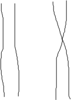
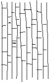

毒と笑いととつげき東北
〜〜過去の日記〜〜
８）01/06/20〜01/08/25分
７）01/05/09〜01/06/12分
６）01/03/02〜01/05/03分
５）01/02/06〜01/03/01分
４）00/12/30〜01/02/05分
３）00/12/22〜00/12/29分
２）00/12/14〜00/12/21分
１）00/11/24〜00/12/13分
01/10/31
新庄と広末の２ちゃん自作自演の実態
★２ちゃんにおける「牛歩新庄：過去ＨＮは新庄30本」と「（過去）多重広末：現在のＨＮはT/H蒼彗星」の挙動に関して。
昔、新庄と広末のイカサマに対する告発を行ったためにおれは彼らに目の敵にされている（笑）。
最近おれがカキコしたスレ周辺でのカキコについてみてみよう。
★以下引用。
牛歩ですね
特に 無言で
いきなり
○○○＞
もしくは
○○○＞3939
○○○＞88946
がきた日には試合中ずーーーーっ
とですね
どちらが悪いかは、よく考えればわかるはず
こう考えると、今まで中傷さえられた人物が果たして悪人かどうかは疑問が残る
ところでありますね 人間関係は難しい まさにそれだと思います
---
いい意見ですね 私も同感です。否定されている人が本当に悪人か？自分自身がそれを煽る等の原因がないか今一度考えるべき事実ですね。単純に例えば牛歩自身が悪いのか？考える必要があるのかもしれません。考えさせられる話題ですね。心境複雑です。
---
質問 東風初心者
あのーー牛歩はいけないことなのでしょうか？
---
新庄さんはいい人だと思いますよ なぜ皆さんそういうのかな
人生に疲れている証拠？
---
また とつげき東北の中傷発言だね
彼は自分自身を東風荘１のカリスマと勘違いしてるらしい
ばかというか・・アホというか・・・笑
---
新庄30本 この人はこないだR2220あったよ はじめてみました
---
おっとでました 自称カリスマ
尊敬しますよ 頻繁なチェック笑
---
ｴｲｶｻﾝ ｶﾞﾝﾊﾞﾚ
きちがいのとつげきがここにもいるね
---
98と同一人物ですが、96なに逝ってるんだろ？
一応のいいわけかなｗ
とつげき君さぁーー
いいかげんやめなさいな
偽善士ぶりは みてて反吐がでますよ
---
そうなんだ へぇー 君がその凸だね ｗ
---
とつげきを否定すると同時に現れる弁護のコメント
まさに カリスマ笑 ただしネット上だけ
---
広末２０００いったんだね。 すげ〜〜な
---
前半の丁寧な口調は新庄の特徴。
後半の古い煽りは広末の口調。
どちらも東風でおれに同じ発言でからんだ直後に書くことが多いのですぐわかるんだが（笑）
★考察
彼らには、全角スペースを１つ空けて区切りにする独特の特徴がある。
上のカキコ全てがそうだ(爆)。
そこで２ちゃん一般での全角スペース区切り使い率を調べてみた。
彼ら自身がカキコしてないと思われるいくつかのスレより。固有名詞間や顔文字や引用は除く。
「マージャンする彼女ってどう思う？」264レス中12レス。
「名古屋でお薦めの雀荘は？」224レス中11レス（うち5レスは特定のＨＮ）。
「プロ雀士って本当に強いの？」81レス中0レス。
「東風荘の「桔梗軍団」って荒らし？」180レス中18レス(うち11レスは特定のＨＮ)
計 749レス中 41レス 特定人間を除くと25レス。
つまり全角スペース区切り使用者出現率は 3.3％)
2ちゃんでは、全角スペースを固有名詞や顔文字以外の部分で用いる人は極めて少ない。
それに対して上記カキコでは100％。
おいおいばれちゃうよ（ ノД`）
現状では
・丁寧な口調で牛歩がいかに悪くないか、新庄のＲがいかに高いか（ただのイカサマだが）、とつげきがいかに「自分はカリスマと誤解しているか」を言う人が新庄（おれ一度もそんなこと言ったことないんだが 笑）。
・なんか古いケンカ屋のようなノリで煽り（現実では淋しいんですか？ﾌﾟﾌﾟ など）、超ラン常連なら誰でもいける2000に広末が到達したことをなぜか宣伝する人が広末。
・いずれも全角スペースを区切りに用いる。
・２人とも２ちゃんの他の発言の文体とかなり違う。その上言うことがむちゃくちゃ（あろうことか彼ら自身の実力が高いと言ったり、牛歩が悪くないと言ったり）なのですぐに「自作自演だろ」のつっこみが入る（最近は共通認識になりツッコミさえ入らなくなった）。
これを読んでもう少し自作自演うまくなってね（笑）。
君らのは「新庄はすごい」「広末はすごい」、なにも言ってないのに「自称人気者」でばればれすぎるの（笑）。
149 ：焼き鳥名無しさん ：01/10/30 12:44
質問 東風初心者
あのーー牛歩はいけないことなのでしょうか？
151 ：焼き鳥名無しさん ：01/10/30 12:54
いけなくはない。
ここの奴らはちょっと異常に反応しすぎ。
牛歩で自己主張するということもある。
152 ：焼き鳥名無しさん ：01/10/30 12:56
>>151
同意。
事実、新庄さんは巧にこれを使って
「牛歩の新庄」という不動の地位を確立した。
多分僻みで批判してる奴が大半だと思う。
153 ：焼き鳥名無しさん ：01/10/30 12:59
↑同じく同意。
なに２〜３分おきに平日の昼間に新庄に有利な議論がすすんでんねん(爆)
その前のレスは５日前、その後上がった直後のレスでさえ30分後やよ(爆)
うんこちゃんか君は( ≧∇≦)ﾌﾞﾊﾊﾊ!
160 ：とつげき東北
>>157
話題というか、「２ちゃんで強いと言われたい」みたいよ。
ID削除何回かくらってもまだ遅延行為して超ランで負けまくった上ワイ卓に観戦1人引き連れて行ってＲ2200を保ってる。
それで「とつげきは有名人だから調子に乗ってる」とかからんでくる（笑）
直後に同じセリフを２ちゃんに投稿して「新庄さんは強い、すごい」だろ。
普通こんな面倒なことしてまで「２ちゃんで強いと言われたい」か？
イカサマでＲを上げて待合で一般人や超ラン雀士にＲをアピールするのとも違う。
それなら気持ちはわからなくもない。が、彼はあくまでも「２ちゃんで」なのよ。
（第一超ランの常連や強豪ならみな、彼の鬼神のごとき下手さは知っている）
なんつーか、まじで異様だ。
毎日上がっていたスレだがおれがこの発言してからピタっと上げる人（「牛歩は違反じゃないですよ」「新庄さんは悪くないですよ」と言ってあげていた約一名）がいなくなった。
ドヘタ！！（ ´Д`）ノ
ちなみに現在おそらく広末はちゃんと打ってると思う。麻雀も新庄に比較すればずっと上手（超ラン平均レベルくらいと思う）。ちょっと騒がしい以外は問題ない。
新庄30本の方はいまでも遅延行為をやっており超ランで非常に嫌われている（他ＨＮは シモ新庄 隆景小早川 など）。
新庄の遅延行為に対する苦情メールをちゃんと出しましょう。５個もメールが届けばmjmanも対処するようです。
01/10/20
超ランの法則（第一）
・挨拶なしの法則
他の３人が挨拶してるのに挨拶しない人の大半はＲ1950以下である（ちゃんと実測データあり。33/39）。
また挨拶が顔文字などの人にも1950以下が多い。
・ダマの法則
東１にダマ7700などを高Ｒ者が上がると、他のＲ1860くらいの他家は東２でピンフ等リーチすべき手もダマであがる。
いや、君のダマは弱いから。
・ワイ卓プレイヤーの法則
/r の試合数が１ケタとかのやつはＲにかかわらず常に切るのが遅すぎ。振りすぎ。トップなのにカンしすぎ。挨拶だけ元気よすぎ。
・ＨＮの法則
上ランよりも威圧感のあるＨＮが多い。半角12文字（全角6文字）めいっぱい使い率が高い。
・観戦者の法則
強い人は観戦などごくまれにしかしない。つまり、そうでない人がよく観戦する。
またＨＮに☆とか★とか♪がついた人の割合が高い。
・一緒に打ちましょうの法則
「とつさん、一度一緒に打ちましょう」と言ってくる打ち手はだいたい第一超ランの平均レベルに満たないレベルである（例えば試合数が３桁とか、Ｒが1850ギリギリ・・・あるいは超ランに来れないレベルなど）。
というのも、第一超ランで定期的に打っている人のほとんどは、嫌でもおれと何度も対戦するから（笑）。
・とつの法則
勝っている時は話し掛けられると饒舌、そうでないと愛想なし（笑）
01/10/09
「議論」エンターテイメントの様式
むかつくとかうざいという自分の感情が出てしまうということが恥ずかしいことであるという感覚はぜひとも身につけておきたいものだ。
何かに対して腹を立てるということは、人間にとって「不快感を感じる」ことそのものであり、不快感を感じるということは損をしたということだからだ。
むかつかされたということは、その相手に損害を与えられたことと同義であり、相手がそれを故意にやったのなら、まんまと相手の攻撃が成功したということである。
殴られたら痛い（不快）なのと同様であって、「おれは彼に殴られた！」と表明するのはかっこわるいことに違いない。
どうすれば相手がむかつくか、どのような行動が単細胞馬鹿にとって不愉快であるかを明確に理解しておくと良い。
「敵」を少しでもむかつかせ、いらだたせ、「むかつく！」と言わせることが「勝ち」なのである。
東風荘のケンカなどを見ていると、「お前うざいな、死ねよ」などと発言する人がいるが、上記のことを考えればこの発言は「私は不快感を与えられました、負けました」と言っているに等しい。
このことには単細胞馬鹿も時々うっすらと気づいているらしく、掲示板などの議論で「なに熱くなってるの？」的な発言が時々好まれるのも、「自分は不快感を与えられていない、そのくせ相手は不快感を持ったね」ということを示したいからである。
（もっともこんな凡庸な願望発言をせねばならないほどの無能が必ずしも当該の状況にいるとは信じがたいが）
そこでネット上で「遊びで」議論をする時には、いかに相手をむかつかせるかということが意識されねばならない。
どうでもよいことでむかついている他人の姿を見るのは楽しいもので、その過程と優れた「嫌し」ロジックはエンターテイメントになる。
エンターテイメントとして提供するなら、誰にでもできる方法で相手のむかつきをアピールする（例えば「熱くなってるの？ プ」と発言する）のではなくて、できるだけ細かいつっこみや工夫されたロジックで相手をコテンパンにすることが望まれる。
ただし頭の弱い人はこのエンターテイメントを提供することも、楽しむこともできない。せいぜい嫌みな発言の一つ一つにむかつかされる（ネタにされる）ことができる程度である。
「議論遊び」というと２ちゃんねるが思い出されるかもしれないが、２ちゃんのエンターテイメントは少し性質が異なる。
２ちゃんは「おれらはヒッキーですよ」的な内省を代償として（自分が賢者であることを最初から否定することによって）、どんな子供らしいデマや願望の発露も許容し、攻撃をしているという感覚そのものに快感を覚えるという術を生み出した。そこでは発言内容の信頼性やロジカルな追いつめではなく、発言の不徳さや容赦なさそのものが楽しまれる。つまり相手をいらつかせるといったような対外的な活動ではなく、相手を攻撃したという個人的な満足に重きを置いているという点で、上記の「ネット上での議論遊び」とはまた別様のものと言える。
たまに２ちゃんをバカにする人がいるがそれは早計で、多くの「２ちゃん被害者」は実際に苛立たされており、その場合は単に「被害者」の下等さと彼が２ちゃん連中にしてやられたという結果だけが残るわけである。どうせ大半の人間はまじめにやっても低レベルなのだから（ヤフー掲示板での議論を見よ）、いっそまじめさを放棄して子供っぽい遊びに参加したほうがいいし、さらに２ちゃんは低レベルでない人も楽しめるという懐の深さも持ち合わせている。
（例えば麻雀でおれに勝つことは困難だし、やろうとしても凡庸な人にはできないが、２ちゃんでおれの麻雀をバカにすることは非常に簡単である。おれのことがむかついたならおれを論破しようとしたり麻雀で勝とうとしたりせず、素直に２ちゃんの門を叩くとよい。そして実際におれより麻雀が強い人でも、２ちゃんでの煽り遊びを楽しむことはできるのだ。無能は精神的な不満感にせまられて、有能は精神的な遊びを求めて、２ちゃんを訪れる）
その意味で２ちゃんは手軽であるばかりか、「発言の不徳さや容赦なさそのものを楽しむ場」という意識を持てば非常に楽しめる奥の深いエンターテイメントなのである。
（そして、いつだって楽しめないのは現状に満足できない心の余裕のない者、つまり劣等感の強い者や善悪にこだわらざるを得ない者である）
議論遊びの形態として前者のもの、つまりロジカルな攻撃や相手を苛立たせる表現の楽しさを満喫するためのコンテンツがある。
うちのリンクから、ヒトシンカの「優性学会」に行くと、エンターテイメントとしての「議論」を展開した記録（衆愚の花園）がみれるから行ってみると良い。
01/10/06
牛歩君と遊びました
対戦牌譜はこちら
※東風戦四人 クイタン無し 流局連荘 Rate変動有り
とつげき東北>
隆景小早川 試合数:366 Rate:2196.57 対戦535卓
とつげき東北>
とつげき東北>サクサク打てや
隆景小早川 ランキング 試合数:2 総得点:-38
平均順位:3.00
monboo>こんにちは、その隆景小早川は牛歩野郎です
monboo 試合数:5586 Rate:2063.68 観戦535卓
とつげき東北>はようて
Babooshka>小早川は 牛歩＆多重 気を付けてね
とつげき東北>２人から青文字きた 小早川は 牛歩＆多重 気を付けてね
monboo>今、やられました。１荘40分
507275>^^
monbooへの伝言を送信しました
monboo>めげないでやっつけてください m(_
_)m
Babooshkaへの伝言を送信しました
monbooへの伝言を送信しました
monboo>今の奴ですか？
monboo>なら、ありますよ。差し上げます(笑) ←一応牌譜をゲット(笑)
monbooへの伝言を送信しました
monbooへの伝言を送信しました
とつげき東北>ドヘタが超ランに来るだけでも迷惑なのに遅いとは･･
507275>恐らく新庄ですよ＾＾
とつげき東北>やな(笑)
とつげき東北>牌譜見たらふるえるほど下手やったからな･･
とつげき東北>（新庄は）
507275>それより，こんな麻雀で遅く打って，どのような意味があるんだろう？
とつげき東北>はよ切れ多重ドヘタ
とつげき東北>幸せじゃないんでしょうな(笑)
507275>そうでしょうな＾＾
507275>ヾ（＠＾▽＾＠）ノわはは
507275>恐らく社会生活でも偏屈なんでしょうね＾＾
とつげき東北>この時間をかければかけるほど彼の人生の幸福が増える(笑)
507275>ヾ（＠＾▽＾＠）ノわはは
とつげき東北>うらやましいヽ(´▽`)ﾉ
507275>金も賭けてない麻雀でこれだから，生だとどうなんだろう？＾＾
とつげき東北>生でも牛歩しとったりして(笑)
507275>ヾ（＠＾▽＾＠）ノわはは
とつげき東北>それやったらちょっとえらいかも(笑)
monboo>ご苦労様です(笑)。送りましたよ
507275>そうそう！それなら度胸がある＾＾
monbooへの伝言を送信しました
monbooへの伝言を送信しました
507275>こんなバカ，人前じゃ，大人しいやるなんだよ
507275>やつ
monboo>よろしくm(_ _)m。しかし何が楽しいんだろ？？？
とつげき東北>色々あるんでしょうなあ(笑)
monbooへの伝言を送信しました
507275>負けてもいいから，早くおわりたい＾＾
monbooへの伝言を送信しました
507275>ヾ（＠＾▽＾＠）ノわはは
とつげき東北>monbooさんからも牌譜もらったし
一応mjmanにメールしときますわ
507275>そうですね
monboo>今日はR60も熱くなって下げてこいつと当り、
monboo>止められました。(爆)
507275>いやがらせですからね
monbooへの伝言を送信しました
とつげき東北>でしょうな(笑)
とつげき東北>まあゆっくりやりましょ( ´ｰ`)
507275>間違いなく新庄ですな＾＾
monboo>ちょっと様子見に行きます（笑）
monbooへの伝言を送信しました
観戦者のチャットを許可しました
とつげき東北>いらっしゃい
monboo>こんばんわ
とつげき東北>ここでもやってますわ(笑)
507275>いらっしゃいませ
monboo>皆さんご苦労様です m(_ _)m
507275>どーも。。。。。。。
とつげき東北>こいつと打った牌譜が他にもあったら下さいね
まとめて送りたい(笑)
507275>ほい
monboo>誰に送るんですか？とつさん
とつげき東北>mjmanです(笑) まあ簡単には削除にはならないだろうけど(笑)
monboo>ほほ〜〜
507275>でも末広貴志が削除になりましたよ
とつげき東北>そうやねー 永久削除されたら一番なんだがな(笑)
507275>あまりの多重と嫌がらせは，なるんですよ
magicpie>話しみえへんよ〜。 こんばんは。
とつげき東北>他のユーザへの教育効果というかそういうのもあるんかな
507275>名前を変えてもＩＤとパスワードから調べるようです
とつげき東北>広末は公認ってかみんな知ってる多重やったからねー
507275>そうそう
とつげき東北>新庄は打ち方が1700レベルという以外あんまりね・・
とつげき東北>南もってはる(笑
507275>隆景小早川 試合数:366 Rate:2196.57
対戦535卓
507275>隆景小早川 ランキング 試合数:2
総得点:-38 平均順位:3.00
とつげき東北>これだけやって平均順位３じゃ浮かばれないのう・・
monboo>私2196って5500試合やって1回しか到達していない
507275>いや！２試合ですからね＾＾
とつげき東北>ほいリーチ
monboo>遅すぎて見逃したりして（笑）
とつげき東北>振ってくれよ牛歩くん(笑)
monboo>暇そうだからしゃべっていていいですか？
とつげき東北>振ってくれたら個人的には許すわ(爆)
507275>＾＾
monboo>今日、チョンボしました（笑）
とつげき東北>うわーーーmonbooさんが！！
とつげき東北>安心した 実は私も最近しました(
≧∇≦)ﾌﾞﾊﾊﾊ！
507275>私なんて１００試合に一回はやりますよ＾＾
507275>ヾ（＠＾▽＾＠）ノわはは
とつげき東北>やりすぎ(笑)
507275>ヾ（＠＾▽＾＠）ノわはは
とつげき東北>それなかったらおれより強いんじゃない？(笑)
Ｒも高いし(笑)
monboo>ノミ手でリーチして上がり牌が出てもロンが出ない（爆）
507275>１，２，３まんを、とく、まちがえます
とつげき東北>うはははは
507275>よく
とつげき東北>なんか ２５ ６９ すげー４面待ちになってたりするね(笑)
monboo>れれれ、と思ったら、全然テンパイしてなかった（笑）
とつげき東北>３４７８で頭がない(笑)
monboo>あれ？代打ちになった
507275>よかった＾＾
monboo>おかえりなさい〜〜〜
とつげき東北>落ちて帰ってきて地味に回線故障ｱﾋﾟｰﾙか？(笑)
とつげき東北>各人の試合時間を保存しといて牛歩判別できるのになあ
とつげき東北>mjman対策してほしいな(笑)
とつげき東北>こんな行為で喜びを感じる人はごくわずかだからいいのか(笑)
507275>nanntomo.....
507275>私はたえられん。。。。。＾＾
とつげき東北>げ
とつげき東北>ふりたくねーーー
とつげき東北>あら牛歩君ざんねん ←牛歩君のマンガンリーチをかわしておれが親マンツモ！ きもちえ〜
507275>＾＾
monboo>どら２で満貫ですね
とつげき東北>ん？
monboo>小早川さん
507275>４品食って，７品捨てて，一通にみせるとは、芸がこまかい＾＾
とつげき東北>なるほど(笑)
とつげき東北>いや、単に危険牌つかみたくなかっただけです(
≧∇≦)ﾌﾞﾊﾊﾊ！
monboo>やってる人からは見えないのか
とつげき東北>うんうん(笑)
507275>それはそうです＾＾
とつげき東北>私は公平に打つのがモットーですが、時々オーラスなんかで
とつげき東北>挨拶なしの牛歩とかがいるとつい無意識にその人以外に
とつげき東北>振ってしまうこととかがあるんですよ・・
507275>それはそうですね＾＾
とつげき東北>意識的ではないですが もしやってしまったらごめんなさいね
507275>ふったら、くやしいですからね＾＾
とつげき東北>だんとつ等ならそいつ以外のリーチに一発で振ったりしてしまうんです
monboo>待ち言ったらとつさんから出たりして（笑）
507275>＾＾
とつげき東北>まあ親には絶対ふりませんがね(笑)
monboo>疲れたから落ちますです。とつさん、またよろしく
^o^/~~
とつげき東北>はい、またね〜〜
とつげき東北>この遅さ慣れてもうた･･次からおれが｢サクサク｣言われそう(笑)
507275>＾＾
とつげき東北>あー長引く･･ごめん･･
507275>いえいえ！どんどん、あがってくださいな
とつげき東北>ツモかトイメンを狙ってたんですが・・・
とつげき東北>なにせ2196だからね 狙い打たないとまくられる
507275>^^
とつげき東北>戦術上やむなくです
とつげき東北>(他から上がらないという保証ではないので注意して下さい)
507275>ヾ（＠＾▽＾＠）ノわはは
とつげき東北>あーあー 今観戦に入ってきた人は
とつげき東北>「これが2196の打ち方か！」とか思うんでしょうか(笑)
507275>＾＾
とつげき東北>あまりにも他の上級者と打ち方が違うので驚くだろうな(笑)
507275>そうですね＾＾
とつげき東北>一発つもろう
とつげき東北>ぅ
とつげき東北>牛歩くんテンパイできなかったんだ？
とつげき東北>ざんねんだったね〜♪ ←牛歩君ノーテンで３位→４位に。
507275>＾＾
... 黒の十字 てっちり magicpie ☆ヒロ★ ひな☆じぃぃ
... ひゃくえん？ 楓の香 亀といっしょ 見切り千両
吟遊雀人
... 葩 agito01 菌太郎 病人です
とつげき東北>牛歩してこんだけ叩かれて４位って寂しいよな
507275>ヾ（＠＾▽＾＠）ノわはは
とつげき東北>おれならちょっと自殺するね(笑)
507275>ヾ（＠＾▽＾＠）ノわはは
とつげき東北>かっこわるすぎるもん(笑)
507275>そうですなぁ＾＾
とつげき東北>ﾁｯ ←牛歩君、東３で上がって３位に浮上
507275>＾＾
507275>必死なんですよ！
507275>ヾ（＠＾▽＾＠）ノわはは
とつげき東北>( ≧∇≦)ﾌﾞﾊﾊﾊ！ がんばってください
507275>ほんとどういう人間か顔みたいですね＾＾
とつげき東北>あああ私、とてもトイレに行きたくなってしまった
とつげき東北>もしも
とつげき東北>３位確定(２位ではなく)をてんぱったら言ってください＞507275
507275>ヾ（＠＾▽＾＠）ノわはは
とつげき東北>トイレにいきたくていきたくてしょうがないのでやむなく
とつげき東北>差し込む可能性があります
507275>それでは，あんたが，インチキになってしまう＾＾
507275>いいんですよ＾＾普通で＾＾
とつげき東北>そうですね(笑) 親の上がりもあるからな(笑) だめか(笑)
507275>上がれたら誰からでも、あがってください＾＾
とつげき東北>了解です〜
507275>早くおわったほうが、しあわせ＾＾
507275>ヾ（＠＾▽＾＠）ノわはは
507275>＾＾
とつげき東北>うわあああおめでとう(笑) ←４位の507275が牛歩君からロン！ 牛歩君ラス！
てっちり>おつかれさま
とつげき東北>すばらしい結果になった( ≧∇≦)ﾌﾞﾊﾊﾊ！
507275>おつかれさまでしたですね＾＾
とつげき東北>おつかれさま ほんと。
牌譜は雀譜でみてみてね。ちなみに激下手（別に牛歩やられたから言ってるのではなく客観的に見て。牌効率悪すぎ）。
ん〜〜1850は厳しいレベルやね。
昔多重やってた広末は、打ち方まあまあうまいというか超ランの平均レベルくらいな感じだったが、こいつもうあからさまに下手。
超ランの平均レベルくらいの人が見ても「うわあこいつ下手！」てわかるレベルですね。
東１からもうドヘタ表しとる。親のヤクハイドラ３のこんな重要な手で４順目６マン切りやと？
おれレベルなら1000試合中１回ミスるかどうかってほどの大ミスやわ。むろん６マンを残してればツモ上がれてるね。
01/09/25
オカルトとロジックとだます方法
大学などで、何か決め事をする時、けっこうじゃんけんだのクジだので決めることが多い。
あみだくじというのは１つの方法だが、基本的にくじは「最初に引いても最後に引いても当たる確率は同じ」ものだ。
10本中１本が当たりのクジがあって、引いたクジは戻さないとすれば、１番目に引こうと５番目に引こうと10番目に引こうと当たる確率は同じになる。
当然、引いたクジを元に戻して、誰かが当たるまで続けるなら１番目に引いた人が一番有利になるけども。
残り物には福があるというのは当然、単なることわざ以上のものではない。
では、あみだくじはどうか。あみだくじは、下の図のようなイメージで考えるとわかりやすい。
下の左側の図が「横線が引かれていない状態」で、１つ横線を引いた状態が右側に対応する。
ちょうど、糸をたくさん垂らしておいてそれらを交互に「よじる」のが、あみだくじにおいて横線を１つ加えるという作業に相当する。

このあみだくじのシステムを考えると、「横棒が縦棒に対して充分に大きくない場合、初期位置と最終位置は近くなることが多い」ことがわかる。
横棒１つ追加することは、その右側と左側の縦棒を「行き来する」操作を１つ増やすことを意味するが、追加がランダムに行われるということは、結局のところ、極端な場合を除いて初期位置に近い位置にたどり着く可能性が高いということである。

ためしに今、適当にあみだくじを作ってみた。
初期位置を左から１，２，３，４・・・１０とする。
このあみだくじをすると、初期位置Ｘであった縦棒の最終位置Ａ（Ｘ）は
Ａ（１）＝２
Ａ（２）＝７
Ａ（３）＝１
Ａ（４）＝５
Ａ（５）＝９
Ａ（６）＝３
Ａ（７）＝４
Ａ（８）＝６
Ａ（９）＝10
Ａ（10）＝９
となっている。初期位置と最終位置の平均距離は2.3である。
つまりこのあみだくじでは、各初期位置から、だいたい2.3くらい離れるのが普通ということだ。
最終位置は、初期位置からあまり離れないということがわかるだろう。
一番単純な話、10本の縦棒を書いたあみだくじで、横棒を５本しか入れなかったら、初期位置１（一番左）から最終位置10（一番右）まで行くことはできないわけで、横棒が充分に多くない限り、初期位置と最終位置は強く関係することが理解できる。
したがって、当たりやハズレの位置がわかっているようなあみだくじでなら、ある程度狙いをつけることができるわけだ。
10人の中から１人だけ掃除当番を決めるような場合、上のあみだくじの最終位置10（一番右）を「掃除当番」として、自分はなるべく左に近い初期位置を選べば良い。
「クジなんだから選ぶ順番では当たる確率は変わらないよ」とか「残り物には福があるって言うしなあ・・・最後にしようかなあ・・・まあいいや適当で」と言って一番左をゲットすることが望ましい。あるいは普段から「残り物には福がある信仰」を広めておくこと。しかも、あくまでも横線は「ランダムに入れている」ようにちゃんと見えなければいけない。唯一の当たり位置をぴたっと当てたりするとあやしまれるので、やはり「一番左でいいや」システムが望ましい。
（逆に、公平なあみだくじを作りたければできるだけ横棒を増やし、最終位置の固まった部分にハズレを置くのではなく分散させること。完全に公平にするためには、ハズレの場所を、あみだくじを引く人に見られないようにして、あみだくじを作った人は最後に引くようにすればいい。）
おれは今までサークルでの嫌な当番決めなどで、何度もこの手法を用いてきたが未だにばれていない(笑)。
おれはオカルトをバカにしているので、みんなも「クジで最初に引こうとするやつバカだよね」などと笑っている。
オマエガナー。
面倒くさがりのおれが、なぜ毎回決め事の時にじゃんけんを避け、なぜあんなにもアミダクジ作りを率先して行うのかを考えろよ(笑)。
01/09/20
ｱｵﾘ( ´Д`)ｱｵｰﾘｰ
実力ランキング宣伝のために２ちゃんにカキコしたらこんなレスが。
「
実力ランキング宣伝のために２ちゃんにカキコしたらこんなレスが。
「
君は２ちゃんのオナペット
見ていて悲しいくらいかわいそうに思える
」
あいかわらずのレスだ。
君が望むような「かわいそうなとつげき東北」はいない。なぜならそれは２ちゃん内で君たちが必死に育んだ妄想だからだ。
（他にもいくつかの妄想がその手で大事に育まれた。麻雀が下手なとつ、誰にも相手にされないとつ、常識のないとつ・・・etc.）
ほら２ちゃんを一歩でてみよう。
例えば東風荘に入ってみよう。君はどんな成績を残し何人の超ラン雀士の目標になった？ 何人に挨拶されいくらファンが近寄ってくる？
例えばオフ会に行ってみよう。君は話題の中心にいるか？
例えば友達や彼女に聞いてみよう。君は他にいないような貴重な友達・彼氏だと思われているか？
例えば学校に行ってみよう。君はそこで充分に力を発揮しているか？
例えば社会に出てみよう。君は誰よりも幸せを感じ自分に満足して生きているか？
この中のどこでおれがかわいそうな人になる？ どうやって？（恐るべき頬骨については弁解しない）
君は確かに、２ちゃんの中でおれより味方が多いだろう。
そうだ誰しもそこでは君に味方してくれる。
とつげき東北はイタイ、おやまの大将だと騒ぎ立てることができるだろう。
・・・でもなぁヽ(´▽`)ﾉ
おやまの大将って、狭い世界で勝った結果から、全てで勝ったような気になる人のことだぞ？
ん？ 誰のことだって？
「イタイ人」と決めました、２ちゃんの中でその幻想を広めました。
でもそこは特殊な空間。君の聖域。どんな場所に出ても君は聖域の心地よさを夢見るだけのあまりにも普通な人だ。
さあかわいそうに思ったふりをしろ。そして心の中で憎め。腹を立てろ。うざがれ。
おれは君のことを憎むことも、君に腹を立てることも、君をうざいと思うこともない。
それらは、君にできるまたとない憂さ晴らしであり、君の人生のささやかな楽しみの一つなのだ。
そのためにおれはちゃんと時々２ちゃんに足を運んでカキコしているのだから。
01/09/10
「何のために？」という愚問。意味を問うな、遊べ。
たまに言われるのは「何のために麻雀研究してるの？」「そんなに真剣にＲを上げて意味あるの？」。これは愚問。
「ものごとの意味を問う」のはたいそう古い考え方だ。
「Ｒを上げても役にたたない」というのは２つの意味で的はずれだ。
１つは、意味（役に立つということ）を求めることの無意味さ。
Ｒを上げることに意味はないとして、フリーに行って調子がよければ小遣い程度の小銭を稼ぐことには意味があるのか？
そんなものに本当に意味があり、莫大な時間をかけて月に平均５千円とか得ることは役に立つのか？
そもそも麻雀なんかすることが役にたつのか？ テレビを見ることは？ マンガを読むことは？
豊かな社会においては、「意味がある」行為などほとんど存在しない。正確に言えば「意味」が「生活の役に立つ」ようなものを表さない。
マンガを読む、面白い、それが「意味がある」ことなのだ。「時間の無駄」ではない、楽しいのだから。
同様に、東風荘を真剣にやってデータを集めることが楽しい、それはもっとも充実した、意味のある行為の一つなのだ。
現代、人生は命をつなぐためにではなく、楽しむためにあると言い切れるほど豊かな社会におれらはいる。
生活の役に立つことしかしないような人間は相当に貧しいか、さもなければ人生の浪費だ。
おれなら、楽しめない人生よりは死を選ぶ。「社会のために」などと浮いたことを堂々と言える変な人はいるだろうけどね。
２つめは、実際に東風荘やＨＰでの活動が「役に立つ」という点だ。
おれが安定Ｒ1500の普通の打ち手だったらこんなにたくさんの知り合いができていない。
今の彼女に出会ったのも、また彼女がおれに注目してくれたのも元はＨＰが有名だったからだ。
そういうことも「役に立たない」と言うなら、「役に立つこと」など食事と排泄と睡眠くらいしかないだろう。
「意味があること」は重要ではない。全てのものに意味はないし、また全てのものには全ての意味がある。
「東風のＲを上げても意味がない」という発言にだって意味はない。単に本人が、そう発言することで自分のＲの低さをフォローしたり、逆に謙虚さをアピールするという効果が得られるだけだ（そして、当人はそんなことに「意味を見いだして」いるのだ 笑）。それなら東風でＲを上げて、「人間の価値は東風のＲで決まる」くらいの発言をして遊ぶ方がおれにとっては30倍楽しい（＝意味がある）。
お前が遺伝子を残して何の意味がある？ 意味などいらない。自分が満足することが重要だ。
01/09/02
誰にでも苦手な科目というのはあるもので、おれは昔から社会科がとても苦手だった。
暗記せねばならず、しかもその内容が興味浅い（笑）。幕末についてとかちょ〜どうでもええっちゅうねん(涙)
何が嫌かといって、高校の時の社会の先生が道徳を振りかざすくせに人間的にきわめてダメなやつで、非常にうっとうしかった。
地理の試験があったのだが、当然おれは高校時代に勉強などまったくしたことがなく、案の定問題が１つもわからなかった。
しかし、「チリの主要な漁獲〜〜」という問題を見たときおれはひらめいた。
アンチョビーだ。
アンチョビーという名前の響きがよかったので、アンチョビーについてだけはよく覚えていたのだ。
そう、チリの主要な海産物はアンチョビーで、それを外国へも輸出している。
アンチョビーと解答欄に記入する。どうだ。おれは正解したぞ。
試験時間の残りは、その先生を嫌すためにすべての空欄に「アンチョビー」と記入する時間に費やされた。
めでたく全ての空欄はアンチョビーで埋まり、おれは心なしか晴れやかな気持ちで試験を終えた。
試験が返されるとき、先生は異常に怒っていた。
「なんだこのふざけた答案は！」
「いえ、答えがわからなかったので知っている単語を書いたのです。」
「まじめに勉強しなさい！」
「ぼくなりに頑張りました。それが精一杯でした。」
「お前は０点だ！」
ここでむかついた。
選択肢式の問題で全て「ａ」を選択しても正解すれば得点がもらえるのに、どうして全部アンチョビーではだめなのか？
アンチョビーと西岸海洋性気候とを交互に書いていた場合どうか？
また２つの並んだ問題で、どちらかがＸ、どちらかがＹとわかっているとき、ベタオリして両方にＸと書くのはどうなのか？
そこでそのことを説明し、反論した。
「僕は得点をもらう権利があります！」みたいに相手をいらつかせるように（笑）。
しかし、先生はなぜか少し落ち着きを取り戻し、勝ち誇ったような顔になっていた。
「東北の言うことは非常によくわかった。」
「( ´ｰ`)y-ﾟﾟ」
「しかし君は０点だ」
「Σ( ´Д`)なぜ！！」
「なぜなら、どの問題の正解もアンチョビーではないからだ」
「Σ（´ﾛ｀;）」
よくみると、「チリの主要な海産物輸入国はどこか」が問題ではないか・・・
・・・・・・。
せんせい、今回はぼくの負けです。
もうぼくは二度とこんなことはしないよ。
アンチョビー中心主義の回答はやめるよ。
次回はアルパカで埋めることにしよう。。
01/09/01
※東風戦四人 クイタン無し 流局連荘 Rate変動有り
とつげさ東北>よろっぴっくねえええええええええええええええええええ
とつげき東北>よろしく
九仙勇輝>よろしく
とつげさ東北>おっはあああああああああああああああああああああああああああ
♪エリー♪>第二から来ました よろしくお願いします。
とつげさ東北>さよか
とつげき東北>とつげさ ひさしぶりや(笑)
とつげさ東北>わしが第１最強と呼ばれとるとつげさや＞エリー
とつげさ東北>よう覚えといたほうがええで
とつげさ東北>そして、北家におるんがわしの弟子のとつげきや
♪エリー♪>わかりました
とつげさ東北>わしらはシスマーいうグループで麻雀の研究をやっとるんや
とつげき東北>師匠･･･Ｒが少しさがってませんか･･･おいたわしや・・
とつげさ東北>妹にＩＤかしてたんや
とつげさ東北>大丈夫や
とつげき東北>なるほど そうですよね！
とつげさ東北>今日中にＲ２１００に復活するで ←このときＲ1800台(笑)
とつげき東北>はや(笑)
とつげさ東北>一昨日までＲ２２００やったしな
とつげさ東北>ええとこ来たで
とつげき東北>妹もどんだけ打っとんねんそれ(笑)
とつげさ東北>わしの妹は超スピード打ちが得意なんや
とつげさ東北>ほな、そろそろリーチいくで
とつげさ東北>もうないやん！ ←もう残り３枚です
とつげき東北>( ≧∇≦)ﾌﾞﾊﾊﾊ!
とつげさ東北>ふ・・・とつげきも上手くなったもんやな
とつげき東北>ありがたき幸せ・・
とつげさ東北>じゃが、わしがリーチをかけたとき
とつげさ東北>師匠と弟子の差いうもんを思い知ることになるやろ
とつげき東北>はい 覚悟してます
とつげさ東北>あとはこことここ引くだけや
とつげさ東北>ところで、エリーはん
とつげさ東北>第２にはわしに匹敵するような雀士はおるんやろか
とつげさ東北>第１はもうわしを楽しませてくれるような奴がおらんのや
♪エリー♪>マスター
とつげさ東北>麻雀マスターやな
とつげき東北>お よう知ってるやん(笑)
とつげさ東北>遠い昔やぶったことがある
とつげさ東北>なかなかええ麻雀を打つようやが
とつげさ東北>メンタルな部分が弱かったようやな
とつげさ東北>あと一歩の強さいうもんが足りん
とつげき東北>うははは かたっとる(笑)
とつげさ東北>まだまだ甘いようやな、エリーはん
とつげさ東北>まあ、第１最強の男と打っとる言うことを忘れんことや
とつげさ東北>エリーはん
とつげさ東北>言うとくけど、第１はなきタンはなしやで
とつげき東北>第一で一番変なキャラを見せてしまったようだ(笑)
とつげさ東北>変ちゃうわ
とつげき東北>失礼しました師匠
とつげさ東北>わしは東風荘の全体のレベルをあげるよう
♪エリー♪>第１のほうが レベルまちがいなく高いです
とつげさ東北>ＭＪＭＡＮはんから頼まれてるんや
とつげさ東北>りーーーーーーーーーーーーーちですかあああああああああ？？？？？
とつげき東北>勝負です 師匠
とつげさ東北>しもたああああああああああああああああああああああああああああ
とつげさ東北>気合でつもおおおおおおおおおおおおおおおおおるううううううううう
とつげさ東北>うおおおおおおおおおおおおおおおおおおおおおおおおおおおおお
とつげさ東北>安めや
とつげき東北>う・・さすが・・
とつげさ東北>まだまだ詰めが甘いようやな
とつげさ東北>エリーはん
とつげさ東北>わしはまだ東２局を打ったことがないんや
とつげき東北>瞬間うちそうやであんた(笑)
とつげさ東北>東１局で必ず誰かを飛ばしとるからな
とつげさ東北>わしを東２局まで付き合わせたんは大したものや
とつげき東北>初めての東２はいかがですか
とつげさ東北>誉めてやるで
とつげさ東北>なかなかええ気分やな
とつげさ東北>でも、わし心臓が弱いやろ
とつげき東北>そうなんかΣ(￣ロ￣|||)えらいキャラちゃうで！
とつげさ東北>せやから長丁場やと、命が危ないんや
とつげさ東北>やるやないか＞九はん
とつげき東北>どこの言葉やねん(笑)
とつげさ東北>その調子で頑張りや＞九はん
とつげさ東北>集中力をきらさずに打っとれば２位はとれるかもしれんからな
とつげさ東北>じゃが、わしの弟子もこのまま終わる奴やないで
♪エリー♪>たのしい 二人です
とつげき東北>じゃがて(笑)
とつげさ東北>ねちっこさだけは人一倍やしな
とつげき東北>あかん じゃがかなり受けた(笑)
とつげさ東北>あかんわ・・・持病の発作がおきてきたで
とつげさ東北>画面が見えへん
とつげき東北>それは振ってもしかたないですね
とつげさ東北>わしは画面がみえんでも、心の目でみれるから大丈夫やけどな
とつげさ東北>これをわしらの言葉では心眼と言うんや
とつげさ東北>目で見ようとするから心の迷いが生じる
とつげき東北>わしらて・・おれもかい(涙
とつげさ東北>やはり、聴牌しとったか＞九はん
とつげさ東北>読んでたで
とつげき東北>読まずに心眼でみればええのに(笑)
とつげさ東北>とつげきよ、場の動きを５感で感じなあかんで
とつげき東北>心眼どこいったんですか(涙
とつげさ東北>あかんわ、
とつげさ東北>見えるのや
とつげさ東北>あんさんの手の中が
とつげさ東北>見えてしまうんや
とつげさ東北>やはり６万やったか ←とつげさ、おれに振り込む(笑)
とつげさ東北>読んでたで
とつげき東北>師匠 お心遣い感謝いたします
とつげさ東北>同じシスマーやしな
とつげき東北>嫌なシスマーやなそれ(笑)
とつげさ東北>２人で１位・２位とるんがわしらの使命や
とつげさ東北>せやないと天国のみぎわ♪やtakepingに顔をあわせられんやろ
とつげき東北>しんだんかΣ(￣ロ￣|||)
とつげさ東北>そうや
とつげき東北>(涙
とつげさ東北>死ぬ間際にいっとったで
とつげさ東北>雀卓で死ねて俺は幸せものだとな
とつげさ東北>ふ・・・むなしいぜ
とつげさ東北>天国のみぎわよおおおおおおおおおおおおおおおおおおおおおお
とつげき東北>みぎわはともかくなんでちょっとマイナーなtakepinやねん(笑)
とつげさ東北>わしは頑張っとるでええええええええええええええええええええ
... 憤詛熄!! 乳毛７ 疾駆★慧湖 星光剣 白鳥麗子♪
... 好色下痢男 ナイトキッズ
とつげさ東北>とつげきはさぼっとるけどな
とつげき東北>Σ(´ﾛ｀；)
とつげさ東北>しもたあああああああああああああああああああああああああああああ
とつげさ東北>１面子そんしてもうたあああああああああああああああああああああ
とつげき東北>ミスっとるやん( ≧∇≦)ﾌﾞﾊﾊﾊ!
とつげき東北>しかもおもいっきり７５６やし(笑)
とつげさ東北>牌の声いうもんを聴くんを忘れとったわ
とつげさ東北>ここはオリや
とつげき東北>聞けるならきけや(笑)
01/08/31
占い
昔は、占いと言うとけっこう「本気」だったような気がするが、最近はパフォーマティヴな占いが増えたな。
どうぶつ占いとか権威のかけらもないし、ティッシュ占いだの、トイレットペーパー持って踊り狂う占いだの、なかなか笑わせてくれる。
どうでもええけどなぜどうぶつ占いはＸ＝Ｙ＝Ｚの形式やねん(笑)。
「あなたは〜〜年〜〜月〜〜日生まれです、その動物は○×です、○×の性格と運勢は・・・」
どうぶついらんやん(笑) 年月日から直接性格と運勢言えや(
≧∇≦)ﾌﾞﾊﾊﾊ！
むかで占い：
１）年月日を聞く
２）ムカデの足をひきちぎり、抜けた本数を見る
３）年月日から性格や運勢を占う
（ムカデに閉じた不幸を与えている）
どうぶつえん占い：
「あなたのどうぶつえんは上野・・」
「だまれ」
01/08/30
わけわからんモノ
こないだ「間違えないしょうゆさし・ソースさし しゃべるくん」という商品の広告をみた。
なんと、そのしょうゆ（ソース）さしを手にとると「しょうゆです」「ソースです」などとしゃべってくれるのだ！
これで間違えてさしみにソースをかけてしまうことがなくなるという優れものだ。
ヒトシンカ「人類はその誕生以来、しょうゆとソースの差異に惑わされ、幾度となく同じ過ちを繰り返してきた」
とつ「何をいうてんねん」
ヒトシンカ「この器具が意図した働きをすることは、確かにわれわれを幸福にするだろう」
とつ「いやおごそかにしゃべるなや」
ヒトシンカ「しかしこの器具には致命的な欠陥がある」
とつ「ほうほう？」
ヒトシンカ「その器具にしょうゆやソースを入れる段階で間違えると、われわれはしょうゆとソースの誤謬を繰り返すことになろう。そしてそれを防ぐシステムは存在しない」
とつ「まあな(笑) 最初間違えたらおわりやよな」
ヒトシンカ「そのような状況を防ぐため、この器具はもっと適切に内容物を判断する必要がある」
とつ「うむ、それは工学系の人間としておれも思うね」
ヒトシンカ「間違えた判断をしないための、よりよい音声アナウンスを提案する」
とつ「おおすごいな」
ヒトシンカ「しょうゆです、ソースです、などではなく、ワニではありません、などにすればよい。２択よりずっと信憑性のあるアナウンスではないか」
とつ「いや意味ないよ！ そして確かに間違えてなさそうやよ！」
ヒトシンカ「この器具はいかに内容物がワニではないかをとつとつと説明する」
とつ「邪魔やわ！ ほんで、万一ワニやったらどうすんねん？」
ヒトシンカ「むろん、形状・構成要素などから総合的に判断し、本物のワニであればワニですとアナウンスする」
とつ「超高性能やよ！ たぶんそれインテルはいってるよ！」
ヒトシンカ「さらにアナウンスの信憑性を高めるためには 地球は太陽系の第三惑星です などにすればよい」
とつ「目的かわっとるがな。なに間違えないために守りに入ってるねん(笑)」
ヒトシンカ「他には しょうゆに似ています」
とつ「わかっとるわ。似てるから困っとんねや。なんで子供レベルの判断やねん！」
ヒトシンカ「一概には言えません」
とつ「もうええわ」